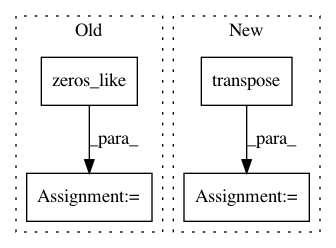

fd0bb23d44c50cd8c4a2fe75726484b973cb0235,models/official/detection/utils/box_utils.py,,bbox_overlap,#Any#Any#,486
Before Change
iou = i_area / u_area
// Fills -1 for padded ground truth boxes.
padding_mask = tf.less(i_xmin, tf.zeros_like(i_xmin))
iou = tf.where(padding_mask, -tf.ones_like(iou), iou)
return iou
After Change
// Fills -1 for IoU entries between the padded ground truth boxes.
gt_invalid_mask = tf.less(
tf.reduce_max(gt_boxes, axis=-1, keepdims=True), 0.0)
padding_mask = tf.logical_or(
tf.zeros_like(bb_x_min, dtype=tf.bool),
tf.transpose(gt_invalid_mask, [0, 2, 1]))
iou = tf.where(padding_mask, -tf.ones_like(iou), iou)
return iou
In pattern: SUPERPATTERN
Frequency: 4
Non-data size: 4
Instances
Project Name: tensorflow/tpu
Commit Name: fd0bb23d44c50cd8c4a2fe75726484b973cb0235
Time: 2019-10-17
Author: pengchong@google.com
File Name: models/official/detection/utils/box_utils.py
Class Name:
Method Name: bbox_overlap
Project Name: drckf/paysage
Commit Name: 41bd741fef07076d854bb164b5df764e9fcc6a2a
Time: 2017-04-17
Author: geminatea@gmail.com
File Name: paysage/models/tap_machine.py
Class Name: TAP_rbm
Method Name: gradient
Project Name: CellProfiler/CellProfiler
Commit Name: 3df28dc6f0bb0704febd6bd1467bb728f4fbe771
Time: 2020-08-13
Author: beth.cimini@gmail.com
File Name: cellprofiler/modules/measuretexture.py
Class Name: MeasureTexture
Method Name: run_one
Project Name: interactiveaudiolab/nussl
Commit Name: 41e4848935c2d7dee09b7db666854d7489fa7d6c
Time: 2017-01-27
Author: ethanmanilow@gmail.com
File Name: nussl/repet.py
Class Name: Repet
Method Name: run